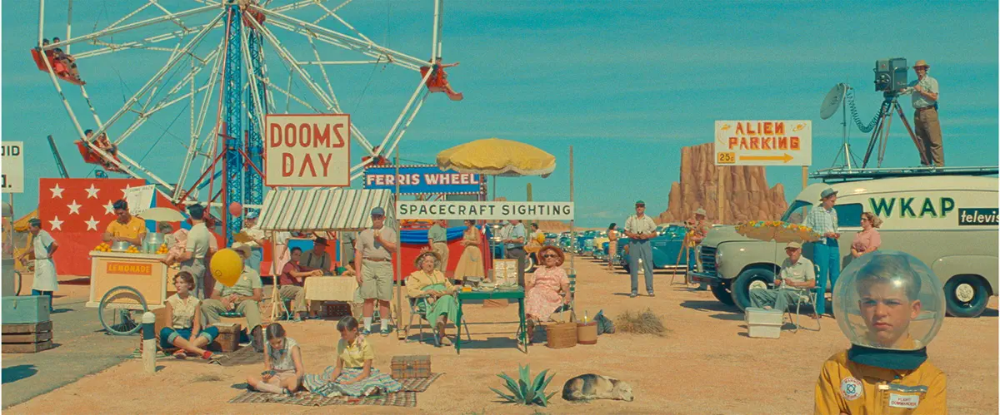
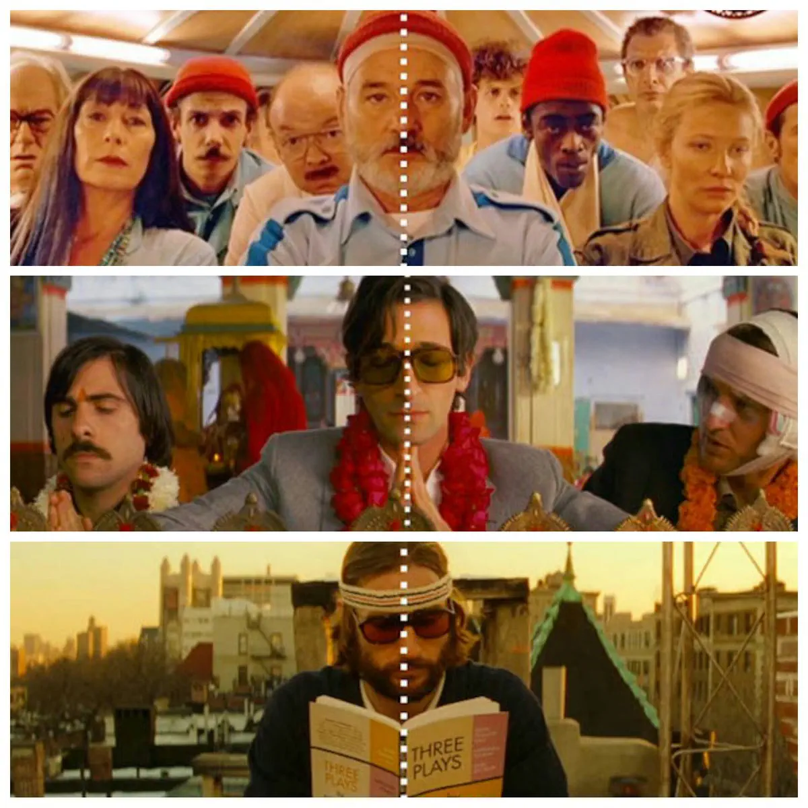
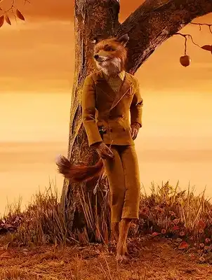
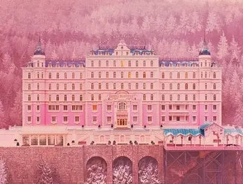
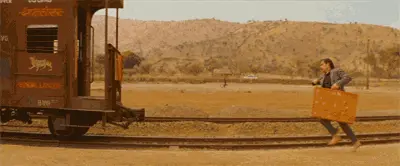
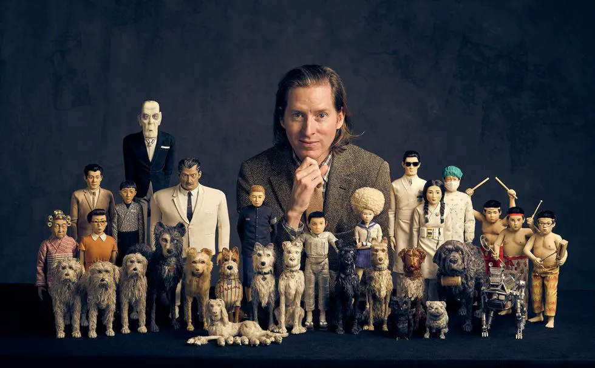

Vol.11 / Symmetry & Aesthetic Special
ウエス・アンダーソン：
完璧なる「箱庭」の職人技
2026.01.29 UP

◎ 概要：実写を超越する「完全統治」
ウエス・アンダーソンの世界において、偶然が入り込む隙間はありません。実写映画でもミニチュアセットを多用する彼にとって、ストップモーションは「画面内のすべての原子をコントロールできる」究極の表現手段。徹底した左右対称（シンメトリー）と、計算し尽くされたカラーパレットが、観る者を陶酔させます。

【Symmetry】一分の狂いも許さないセンターショットの美学
◎ 作品1：『ファンタスティック Mr.FOX』(2009)
背広を着たキツネが野生の本能に目覚める。アンダーソンが初めて挑んだこの作品では、あえて「毛並みがざわつく」ボイリング現象を残しました。これは、デジタル（**ITパスポート：離散データ**）では再現できない、物理的なゆらぎ（**G検定：ノイズの付加価値**）を肯定する、彼の挑戦でもありました。

【Boiling】物理的な「毛」が動くことで生まれる、奇妙な生命感
◎ 作品2：『犬ヶ島』(2018)
近未来の日本を舞台にしたこの作品では、パペットの表情管理に「リプレイスメント（顔パーツの差し替え）」が極限まで使われました。一人のキャラクターに数百の口の形、数千の表情が用意されるという、組合せ爆発（**G検定：探索の限界**）への人力による回答です。
【Replacement】1,000体を超えるパペットが織りなす「日本」への愛
◎ 関連実写作：グランド・ブダペスト・ホテル / ダージリン急行
『グランド・ブダペスト・ホテル』の全景は巨大なミニチュアですし、『ダージリン急行』の列車内は動く箱庭です。実写映画であっても、彼は「ストップモーション的な思考（**ITパスポート：アルゴリズム思考**）」で画面を制御しています。

【実写】ミニチュア特撮の頂点

【実写】色彩設計の教科書
◎ Gemini推薦：ギレルモ・デル・トロのピノッキオ
アンダーソンの「カクつく質感」とは対照的に、24fpsの滑らかさを人力で追求したもう一つの怪物。アナログの極北を体感するなら、この作品は外せません。

【Recommendation】生命を宿すための、もう一つのアプローチ
◎ 今後の予定：Wes Anderson: The Archives
2026年7月まで、ロンドンのデザイン・ミュージアムにて彼の大規模な回顧展が開催中です。IT/デジタルの波が押し寄せる現代だからこそ、彼の「物理的なアーカイブ」は、私たちに人間しか作れない価値を再認識させてくれます。

【Future】2026年、ロンドンでの伝説的な展示会
🔍 Animeda! 視点：12コマの「間」をデザインする
アンダーソンの世界が心地よいのは、AIが予測する「滑らかな正解」を裏切り続けているからです。12fpsという「あえて情報のサンプリングレートを下げる」手法は、工場の歩留まり改善とは正反対の非効率な作業ですが、その結果生まれる「脳が補完したくなる空白」こそが、彼の魔法の正体。vol.10の悪夢的な流動性と比較すると、アンダーソンの「静止に近い美学」がいかに特異かがわかります。